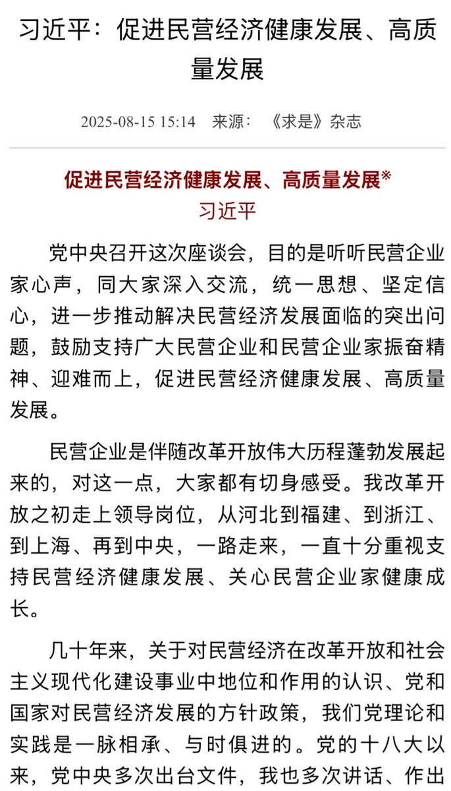
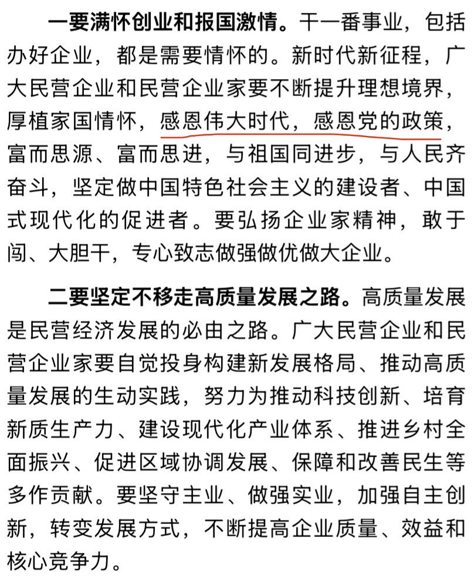
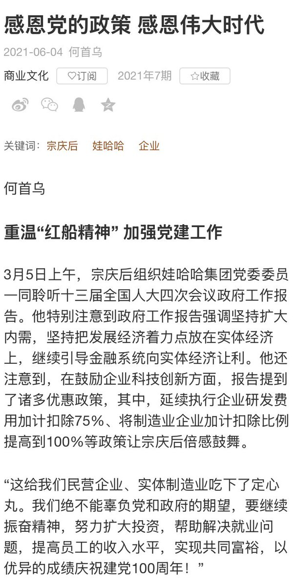
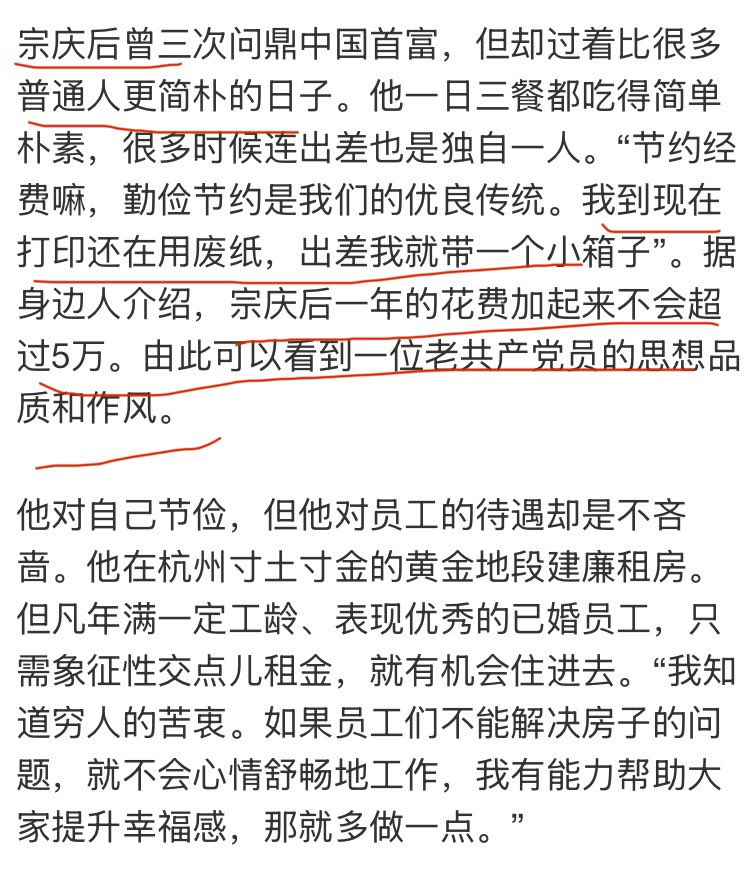

拱北靠北
@psyofsouthwest
@ChinaMacroFacts 按财富消费比计算，所有富豪都是守财奴




中国政经事实ChinaFacts
@ChinaMacroFacts
求是今天刊发年初领袖在民营企业座谈会上的讲话，里面督促民企“感恩伟大时代、感恩党的政策”，这个提法很大，并不被官方所常用。
宗庆后的企业软文曾用过此标题，前端时间流传甚广的段子正出自此文。
“宗庆后三次问鼎首富，过着比普通人更简朴的日子，一年花费不超5万，由此看出老共产党员的作风”。 https://t.co/W9wWMQcNz0